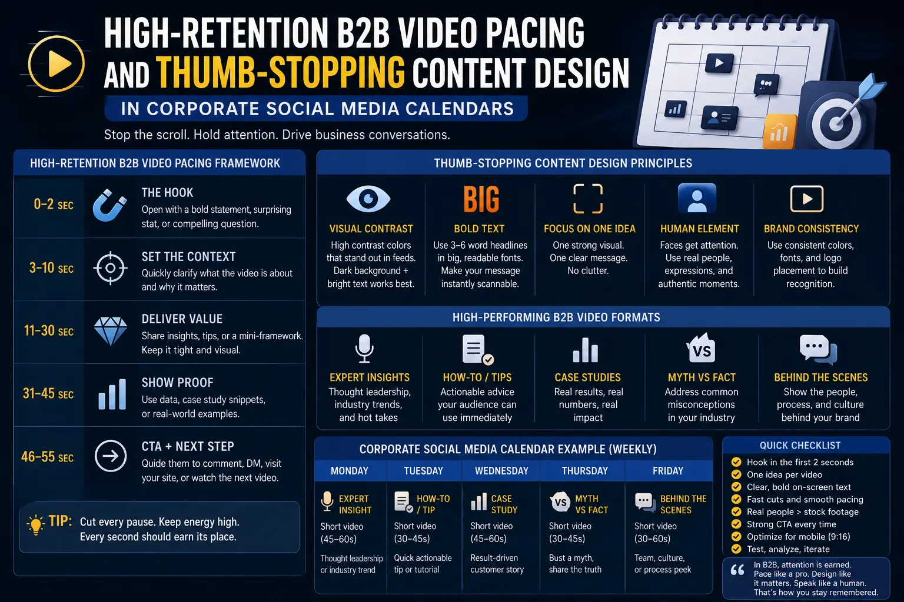
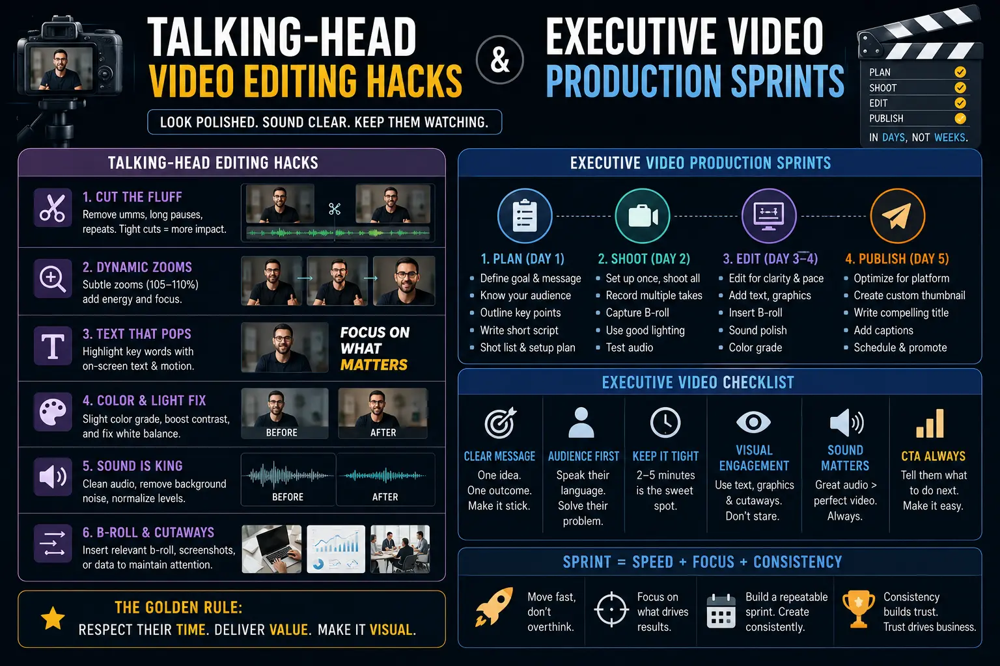

Editing Formats and Visual Pacing Habits That Keep Professionals Glued to Your Video Feeds
In the hyper-competitive landscape of modern B2B marketing, capturing and holding the attention of busy industry professionals has become an extraordinarily difficult task. The modern executive or decision-maker does not scroll through their social media feeds in search of entertainment; instead, they are seeking rapid, high-density, authoritative insights that can help solve complex business challenges. This means that brands must approach Social Media Content Creation with a high degree of mathematical precision. Simply uploading unedited video calls or long-form webinars is no longer sufficient. To cut through the noise, businesses must master High-Retention B2B Video Pacing—an intentional strategy of structuring visual elements, pacing beats, and narrative hooks to transform casual feed-scrollers into engaged, long-term viewers.
The first step in winning this battle is capturing attention in the first three seconds. This is where thumb-stopping content design plays a pivotal role. Every graphic element, subtitle card, and layout decision must be optimized to create an immediate visual interrupt. But stopping the scroll is only half the battle. Once a professional has paused on your video, you must keep them engaged. This is achieved by utilizing advanced Talking-head video editing hacks that add dynamic visual variations, remove dead air, and emphasize key concepts without distracting from the speaker’s message. When these habits are consistently applied, they transform simple updates into powerful, authoritative assets that can be distributed across corporate social media calendars to drive real business results.
The Psychology of the Scroll: Why Professionals Tune Out
Understanding how professionals consume content is critical to designing high-retention video. Unlike general consumer audiences who might watch a video for pure entertainment or aesthetic appeal, B2B viewers are constantly evaluating the opportunity cost of their time. If a video does not prove its value within the first three seconds, the viewer's thumb immediately completes the scroll. The traditional corporate video, which typically opens with a slow animated logo, a lengthy self-introduction, or a broad, generic question, is highly ineffective. Busy decision-makers do not have the patience for slow build-ups; they want to know immediately what problem you are solving and why they should listen to you.
This is why modern marketing departments are shifting their workflows. By using systematic Short-Form Visual Asset Slicing, brands can take long-form, value-dense presentations and break them down into short, high-impact clips. Each sliced clip is designed with a strong hook-first structure, bringing the most valuable insight to the very beginning of the video. Rather than asking a viewer to dedicate half an hour to a presentation, you present them with a 60-second summary of a critical framework. This approach respects the viewer’s time while ensuring that your brand’s core expertise is delivered clearly and concisely.
The Foundations of High-Retention B2B Video Pacing
So, how do you edit a video that keeps a busy director, VP, or founder glued to their screen? The answer lies in the pacing and visual density. Pacing in B2B videos must strike a delicate balance: it needs to be energetic enough to prevent boredom, yet professional and structured enough to maintain credibility. You cannot rely on fast zoom-ins, flashy memes, or loud sound effects that are popular among teenage content creators. Instead, your High-Retention B2B Video Pacing must be driven by logical flow, structured visual cues, and strategic editorial density.
A solid pacing framework begins by eliminating all dead space. Every breath, pause, and filler word ("uh," "um," "like") must be cleanly edited out. This keeps the narrative moving forward at an efficient pace. Furthermore, the editor must introduce a visual change or "reset" every 4 to 6 seconds. This reset does not require changing the speaker's location; it can be as simple as changing the crop from a medium shot to a tight shot, displaying a graphic slide, or overlaying a relevant piece of B-roll. These frequent visual shifts break up the monotony, keeping the viewer's eyes active and preventing cognitive fatigue. When combined with clear, high-contrast typography, this structured pacing ensures that the key takeaways are easy to absorb, even when viewed on a muted screen in an office setting.
Algorithmic Reach
Social media algorithms prioritize watch time and completion rates. Using High-Retention B2B Video Pacing ensures that viewers stay engaged longer, prompting platforms to distribute your content organically to a wider audience.
Authority Building
Clean, value-dense video production establishes your brand as an expert. High-quality editing and professional pacing show that you respect the viewer's time, boosting the credibility of your leadership team.
Pipeline Conversion
A professional who watches your video in full is far more likely to respond to your call-to-action. High-retention formats ensure that your core business message is delivered, driving higher-quality leads to your team.
Asset Efficiency
By planning your production around Short-Form Visual Asset Slicing, one filming session can generate months of short clips. This simplifies your workflow and ensures a steady stream of content for your feeds.

Talking-Head Video Editing Hacks: The Post-Production Playbook
The talking-head video is the most common format for professional thought leadership. It allows founders, experts, and partners to communicate directly with their audience, building a personal connection that text-based posts cannot match. However, a single, static angle of a person talking can quickly lose its appeal. To keep viewers engaged, editors use specific Talking-head video editing hacks to add visual interest and maintain a clean, professional look.
- Strategic Crop Adjustments (Zoom Cuts): By filming in a high-resolution format (like 4K), editors can zoom in on the footage by 5% to 10% in post-production. The editor can then switch between the wide shot and the cropped shot to emphasize key points. This simulates a dual-camera setup, creating visual variety that re-engages the viewer's brain.
- Dynamic Text and Subtitles: Since many professionals watch video feeds with the sound turned off, having clear, readable subtitles is essential. But standard captions can be hard to follow. Editors use kinetic subtitles—where words appear on screen in sync with the speaker's voice, highlighting key terms in contrasting colors. This serves as a vital element of thumb-stopping content design.
- Data Overlays and Graphic Cards: When the speaker mentions a metric, a concept, or a process, the editor should display a graphic on screen. This could be a clean chart, a key takeaway slide, or a screenshot of a dashboard. These overlays help clarify complex points and keep the viewer visually engaged.
- Smooth J-Cuts and L-Cuts: Instead of cutting audio and video at the same time, editors use overlapping cuts. A J-cut introduces the audio of the next segment before the visual transition occurs, while an L-cut keeps the audio of the speaker playing over the new visual slide. This makes the video flow naturally and prevents abrupt transitions.
- Subtle Sound Design: Professional B2B videos benefit from careful sound design. Adding low, warm background music and subtle sound effects (like paper sweeps or digital clicks) to accompany visual transitions keeps the viewer's brain focused and alert.
Integrating these hacks into your workflow turns simple talking-head recordings into high-engagement business videos that capture and hold the attention of busy decision-makers.
Short-Form Visual Asset Slicing: Maximizing Your Production
Creating fresh video content every single day is a major challenge for B2B marketing teams. Senior leaders are busy running the company, and scheduling frequent filming sessions can disrupt their work. The solution is to transition from a daily production model to a structured distribution model centered around Short-Form Visual Asset Slicing.
Instead of shooting 30 separate short videos, your team schedules one high-quality, 45-minute interview, podcast, or presentation. During this session, the executive speaks naturally, sharing deep insights on industry trends and business challenges. The post-production team then takes the master file and slices it into 15 to 20 independent, short clips, each lasting 30 to 90 seconds. Each clip is optimized with a strong visual hook, kinetic subtitles, and tailored pacing. This workflow allows you to build a robust pipeline of content for your corporate social media calendars with minimal demand on your executive's time, making it a highly efficient way to maintain a consistent digital presence.
LinkedIn Optimization
LinkedIn is the primary platform for professional engagement. Videos here should focus on deep, structured insights, case studies, and framework breakdowns. They must be optimized for silent viewing, featuring clean, readable subtitles and high-contrast title cards. Pacing should be steady and authoritative.
YouTube Shorts & Reels
These channels are highly visual and require rapid, punchy pacing. The hook must capture attention within the first second, and the visual scene should reset frequently. The tone can be energetic, and the video should conclude with a clean loop to encourage viewers to watch the clip multiple times.
Twitter / X Video
Twitter is a fast-paced, text-heavy platform where users consume content quickly. Video assets here need bold titles and direct, punchy hooks. The content should get straight to the point, sharing contrarian opinions, key findings, or immediate industry news in under 60 seconds.

Executive Video Production Sprints: Scaling Without Friction
For founders and C-level leaders, time is the most expensive resource. They cannot afford to spend days in front of cameras, recording videos week after week. To solve this problem, marketing teams use executive video production sprints. A production sprint is a highly structured, 4-to-6 hour filming session designed to produce a large volume of video assets in a single day.
Before the shoot day, the marketing team outlines the topics, drafts the scripts, and sets up a teleprompter. The executive reviews the content in advance, making adjustments to match their natural voice. The studio is pre-configured with multiple camera angles, high-quality lighting, and premium microphones to ensure consistent production value. The executive then records the scripts back-to-back. The director guides the delivery, ensuring that each clip starts with a strong verbal hook and maintains a high level of energy. The post-production team then takes this raw footage and applies Talking-head video editing hacks and thumb-stopping content design templates to create a cohesive set of video assets.
By using production sprints, companies can generate 20 to 30 high-quality video clips in a single day. This batch approach ensures a steady stream of content for corporate social media calendars, maintaining a strong digital presence while allowing executives to remain focused on running the business.
Building Your Professional Brand Visibility Blueprint
To succeed in B2B video marketing, you cannot rely on occasional, ad-hoc posts. You need a systematic, repeatable framework that structures your content creation from ideation to distribution. This is what we call building a professional brand visibility blueprints.
This blueprint outlines how your organization will plan, shoot, edit, and distribute video content to build long-term trust and market authority. It defines your core content pillars (e.g., industry analysis, case studies, product walkthroughs), establishes the frequency of your executive video production sprints, and defines the visual guidelines for your thumb-stopping content design. It also sets the rules for how long-form files are handled during Short-Form Visual Asset Slicing and how they are scheduled across your channels.
When you have a defined visibility blueprint, your marketing team no longer wonders what to post next. They follow a clear, documented process that consistently delivers high-value, highly polished video content to your target audience, establishing your brand as the leading voice in your industry.
The Technical Post-Production Pipeline
To ensure that your B2B video content consistently meets professional standards, your post-production team should follow a standardized technical pipeline. This process ensures that every video has a high level of visual polish and clean, professional audio.
- Timeline Configuration: Set up your timeline to match vertical formats (1080x1920) at a consistent frame rate (24fps or 30fps). This ensures smooth playback across all platforms.
- Jump Cut Precision: When editing out pauses, adjust the scale of the close-up shot by 5% to 10% to prevent the transition from feeling jarring. This creates a clean jump cut that mimics a two-camera setup.
- Color Correction and Grading: Apply a clean, high-contrast color grade that enhances the skin tones of the speaker while maintaining neutral background tones. Avoid using heavy, artistic filters that can look unprofessional.
- Audio Processing: Clean the voice track by applying a noise gate, mild compression, and a limiter (set to -3dB). This ensures that the speaker's voice is clear, consistent, and easy to understand.
- Caption Style Settings: Use a bold, clean font (like Montserrat or Inter) for your kinetic captions. Highlight key business terms in a contrasting brand color (like gold or blue) to draw the eye and reinforce key messages.
Frequently Asked Questions
Q1. What editing formats and visual pacing habits keep professionals glued to B2B video feeds?
Answer: The editing formats and visual pacing habits that keep professionals engaged include hook-first introductions (capturing interest in the first 3 seconds), kinetic typography (animated subtitles that emphasize key terms), dynamic jump cuts to remove silent gaps, regular visual switches (B-roll, charts, or angle changes every 4-6 seconds), and high-quality sound design. For professional audiences, pacing must be energetic yet respectful of their intelligence—delivering high-density, valuable insights without unnecessary filler. By combining the pacing style of top social creators with the professional substance of executive insights, you create high-retention content that stands out in busy B2B feeds.
Q2. How do talking-head video editing hacks improve video watch time?
Answer: Talking-head video editing hacks improve watch time by introducing visual variety to otherwise static recordings. These hacks include using digital zoom-ins and zoom-outs to emphasize key statements, overlaying relevant B-roll or screenshot graphics when discussing a framework, adding text animations that highlight important keywords, and incorporating subtle sound effects (like a camera shutter or paper turn) to signal transition points. These visual and auditory patterns break the monotony of a single talking-head angle, keeping the viewer's brain active and engaged throughout the video.
Q3. What is a thumb-stopping content design and how does it fit into corporate social media calendars?
Answer: Thumb-stopping content design refers to the visual layout, typography, color contrast, and thumbnail graphics optimized to grab a user's attention while they are scrolling through their feed. In a corporate social media calendar, this involves designing custom preview images, high-contrast title templates, and short video covers that immediately tell the user what they will learn. By ensuring every post has an attention-grabbing visual hook, you maximize your click-through rates and build consistent engagement.
Q4. How do executive video production sprints support high-volume content creation?
Answer: Executive video production sprints support high-volume content creation by consolidating scripting, filming, and direction into a single focused day of filming. Instead of trying to record videos every week, the executive works with a production team to record multiple months of short-form visual assets in one session. This batch approach ensures a steady, omnipresent feed of professional video assets while minimizing the executive's time investment, allowing them to remain focused on operational leadership.
Conclusion: Elevating Your Video Engine
In the modern digital landscape, the attention of professionals is one of the most valuable commodities. To capture and hold this attention, brands must move away from slow, outdated corporate video formats and embrace modern, high-retention editing techniques. By implementing High-Retention B2B Video Pacing, leveraging Talking-head video editing hacks, and structuring your operations around executive video production sprints, you can create a highly efficient content engine.
Maintaining a consistent presence on corporate social media calendars with sliced, optimized visual assets is the key to building long-term authority and trust. By establishing a clear professional brand visibility blueprints, your brand can consistently produce high-engagement business videos that build pipeline, drive leads, and establish your organization as the leading voice in your industry. If you are ready to implement these visual pacing habits and build a professional brand presence, the team at The PhD Ads is here to support you.
Key Topics
Ready to Build a High-Retention Video Engine that Keeps Professionals Glued?
At The PhD Ads in Madurai, we specialize in B2B Social Media Content Creation, High-Retention B2B Video Pacing, and Short-Form Visual Asset Slicing for growth-oriented companies. Let us help you design and execute a custom professional brand visibility blueprints that commands attention and builds trust.
Email: team@e2o.in